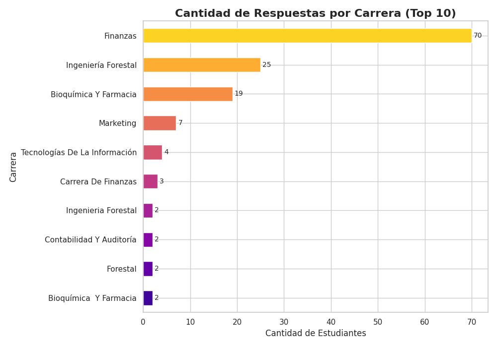
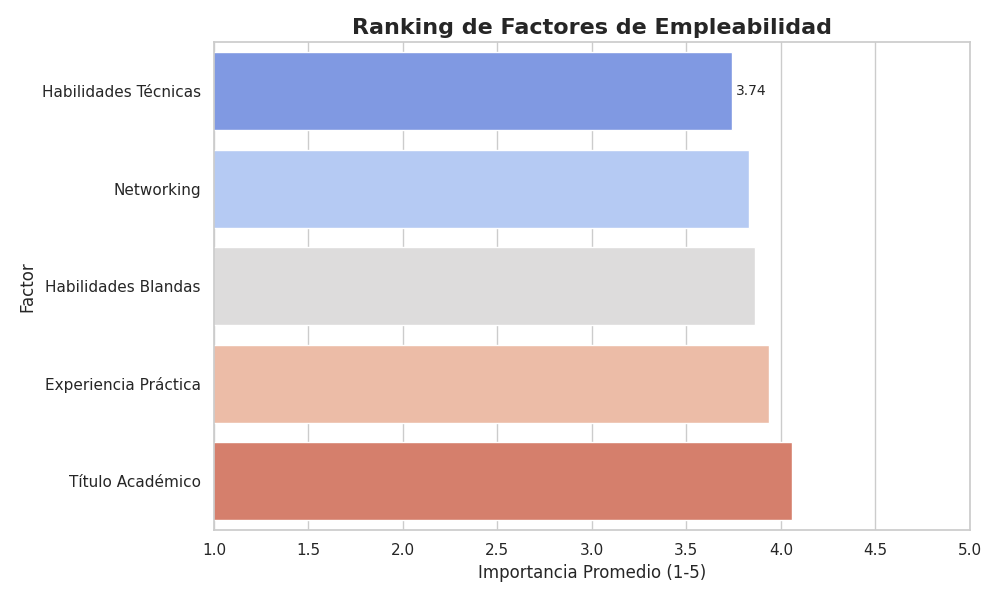
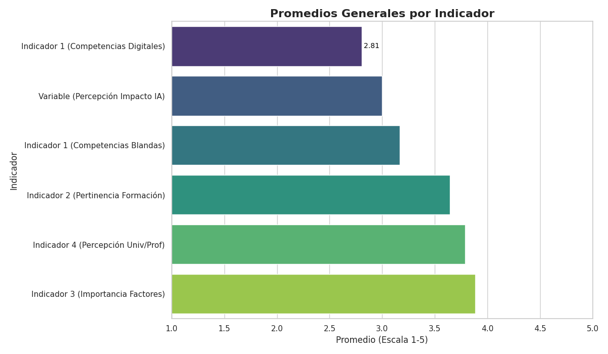
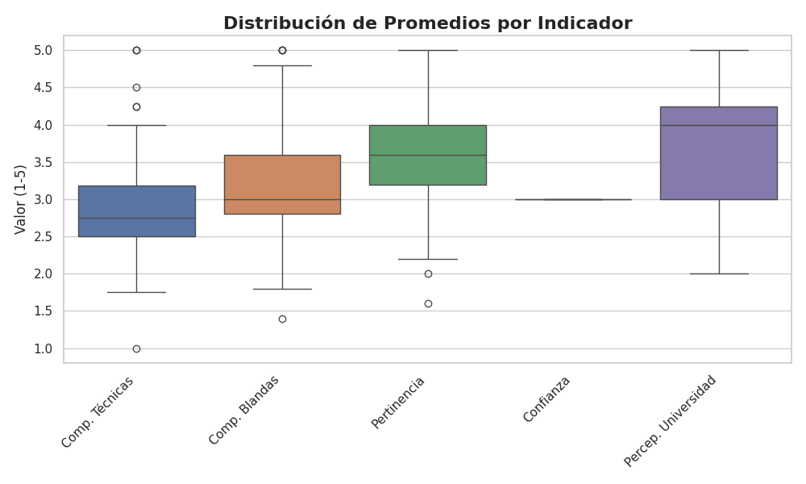
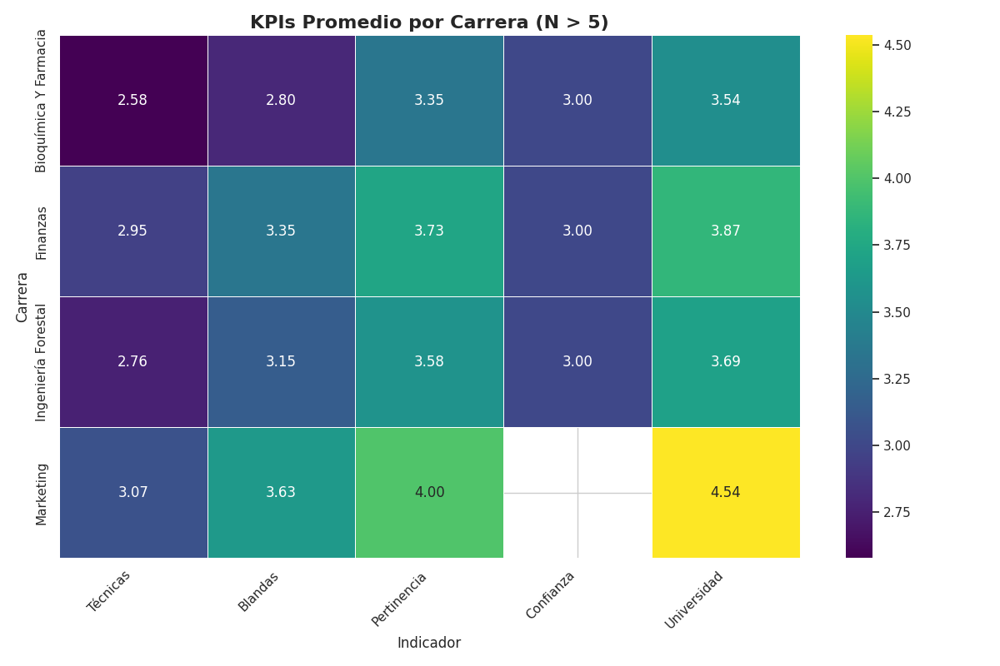
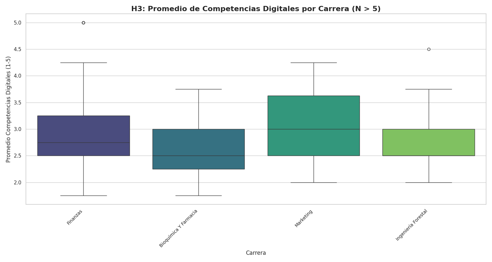
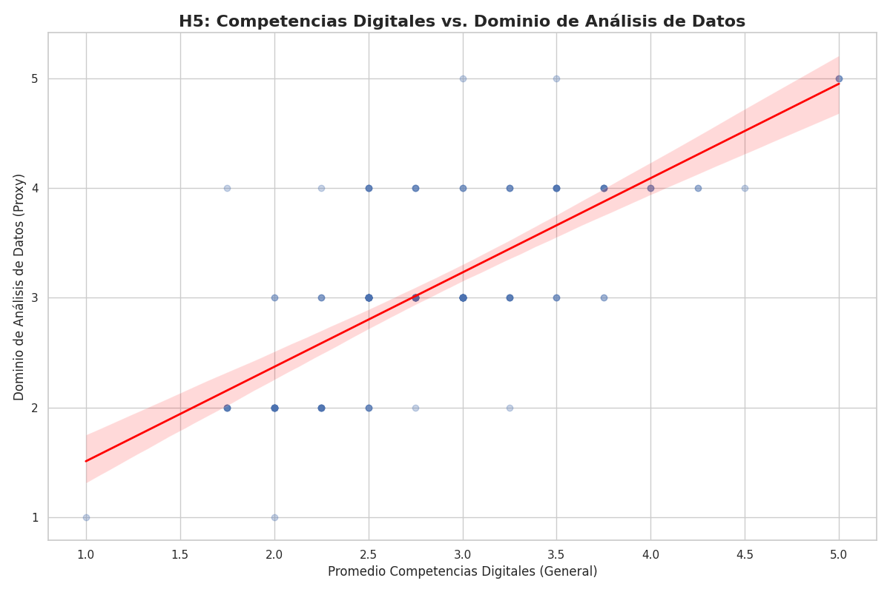

Introducción
Este dashboard presenta un análisis de la percepción sobre el uso de la Inteligencia Artificial (IA) y su impacto en la empleabilidad, basado en una encuesta realizada a estudiantes y profesionales.
Participantes por Carrera
Indicadores Clave

Factores de Empleabilidad
Resumen de Indicadores
Distribución de Indicadores
KPIs por Carrera
Análisis de Competencias por Carrera (H3)
Este gráfico muestra la distribución de competencias específicas entre las diferentes carreras analizadas. Se observa que las carreras técnicas tienden a mostrar mayor afinidad con competencias relacionadas a la IA, mientras que las carreras humanísticas presentan una distribución más diversa de competencias.
Relación entre Competencias y Datos (H5)
El análisis revela una correlación significativa entre el manejo de datos y el desarrollo de competencias específicas. Se evidencia que los estudiantes con mayor exposición al análisis de datos tienden a desarrollar competencias más alineadas con las demandas actuales del mercado laboral en el contexto de la IA.